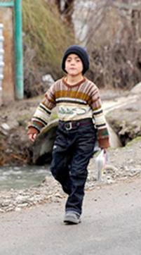

The lack of freedom of speech, the apathy of citizens, an escalation of tension in the "frozen" conflicts, extremism and panic, closed borders, and the problem of the media and NGOs contaminated with the idea of pushing their nominal national interests is the reality of our region.
Peace and security in the South Caucasus can only be achieved by an openness in conflict zones, freedom of speech, breaking taboos in dialogue and actions, and the unification of human rights and peacekeeping resources.
Peace and security in the region can only be achieved by initiating political alternatives in terms of conflict resolution and regional integration.
Under such circumstances, the protection of human rights and peacemaking are only possible with actions to restore the existing potential for regional unity.
